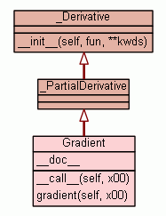

Class Gradient
source code

Estimate gradient of fun at x0, with error estimate
Parameters
----------
fun : callable
function to differentiate.
n : Integer from 1 to 4 defining derivative order. (Default 1)
order : Integer from 1 to 4 defining order of basic method used.
For 'central' methods, it must be from the set [2,4]. (Default 2)
method : Method of estimation. Valid options are:
'central', 'forward' or 'backward'. (Default 'central')
romberg_terms : Number of Romberg terms used in the extrapolation.
Must be an integer from 0 to 3. (Default 2)
Note: 0 disables the Romberg step completely.
step_fix : If not None, it will define the maximum excursion from step_nom
that is used and prevent the adaptive logic from working.
This will be considerably faster, but not necessarily
as accurate as allowing the adaptive logic to run.
(Default: None)
step_max : Maximum allowed excursion from step_nom as a multiple of it. (Default 4)
step_nom : Nominal step. default maximum(x0, 0.02)
step_ratio: Ratio used between sequential steps in the estimation
of the derivative (Default 2)
The steps used h_i = step_nom[i]*step_max*step_ratio**(-arange(steps_num))
step_num : integer
if not specified it will be set according to the following rules:
step_num = 26 if step_fix is None
step_num = 3.+ np.ceil(self.n/2.) + self.order + self.romberg_terms +4 otherwise
vectorized : True - if your function is vectorized.
False - loop over the successive function calls (default).
Uses a semi-adaptive scheme to provide the best estimate of the
derivative by its automatic choice of a differencing interval. It uses
finite difference approximations of various orders, coupled with a
generalized (multiple term) Romberg extrapolation. This also yields the
error estimate provided. See the document DERIVEST.pdf for more explanation
of the algorithms behind the parameters.
Note on order: higher order methods will generally be more accurate,
but may also suffer more from numerical problems. First order
methods would usually not be recommended.
Note on method: Central difference methods are usually the most accurate,
but sometimes one can only allow evaluation in forward or backward
direction.
Assumptions
-----------
fun : SCALAR analytical function to differentiate.
fun must be a function of the vector or array x0,
but it needs not to be vectorized.
x0 : vector location at which to differentiate fun
If x0 is an N x M array, then fun is assumed to be
a function of N*M variables.
Examples
--------
>>> import numpy as np
>>> import numdifftools as nd
>>> fun = lambda x: np.sum(x**2)
>>> dfun = nd.Gradient(fun)
>>> dfun([1,2,3])
array([ 2., 4., 6.])
# At [x,y] = [1,1], compute the numerical gradient
# of the function sin(x-y) + y*exp(x)
>>> sin = np.sin; exp = np.exp
>>> z = lambda xy: sin(xy[0]-xy[1]) + xy[1]*exp(xy[0])
>>> dz = Gradient(z)
>>> grad2 = dz([1, 1])
>>> grad2
array([ 3.71828183, 1.71828183])
# At the global minimizer (1,1) of the Rosenbrock function,
# compute the gradient. It should be essentially zero.
>>> rosen = lambda x : (1-x[0])**2 + 105.*(x[1]-x[0]**2)**2
>>> rd = Gradient(rosen)
>>> grad3 = rd([1,1])
>>> grad3
array([ 0., 0.])
>>> np.abs(grad3)<=rd.error_estimate
array([ True, True], dtype=bool)
See also
--------
Derivative, Hessdiag, Hessian, Jacobian
|
|
|
|
|
|
|
Inherited from _Derivative:
__init__
Inherited from _Derivative (private):
_backward,
_central,
_check_params,
_derivative,
_fda_mat,
_fder,
_forward,
_initialize,
_romb_extrap,
_set_delta,
_set_difference_function,
_set_fda_rule,
_set_romb_qr,
_trim_estimates
Inherited from object:
__delattr__,
__format__,
__getattribute__,
__hash__,
__new__,
__reduce__,
__reduce_ex__,
__repr__,
__setattr__,
__sizeof__,
__str__,
__subclasshook__
|
|
|
_grad_txt = '\n Parameters\n ----------\n fun : calla... |
|
|
__doc__ = '''Estimate gradient of fun at x0, with error estima...
|
|
Inherited from object:
__class__
|
Gradient vector of an analytical function of n variables
CALL: [grad,err,finaldelta] = fun.gradient(x0)
grad = first partial derivatives of fun evaluated at x0. Size 1 x N
err = error estimates corresponding to each value in grad. Size 1 x N
finaldelta = vector of final step sizes chosen for each partial derivative.
fun = analytical function to differentiate. fun must
be a function of the vector or array x0.
x0 = vector location at which to differentiate fun
If x0 is an nxm array, then fun is assumed to be
a function of N = n*m variables.
GRADEST estimate first partial derivatives of fun evaluated at x0.
GRADEST uses derivest to provide both derivative estimates
and error estimates. fun needs not be vectorized.
Examples
#[grad,err] = gradest(@(x) sum(x.^2),[1 2 3]) # grad = [ 2,4, 6]
|
_grad_txt
- Value:
''' Parameters
----------
fun : callable
function to differentiate.
n : Integer from 1 to 4 defining derivative order. (Default 1)
order : Integer from 1 to 4 defining order of basic method used.
For \'central\' methods, it must be from the set [2,4]. (D
...
|
|
__doc__
- Value:
'''Estimate gradient of fun at x0, with error estimate
'''+ _grad_txt+ '''
Assumptions
-----------
fun : SCALAR analytical function to differentiate.
fun must be a function of the vector or array x0,
but it needs not to be vectorized.
...
|
|